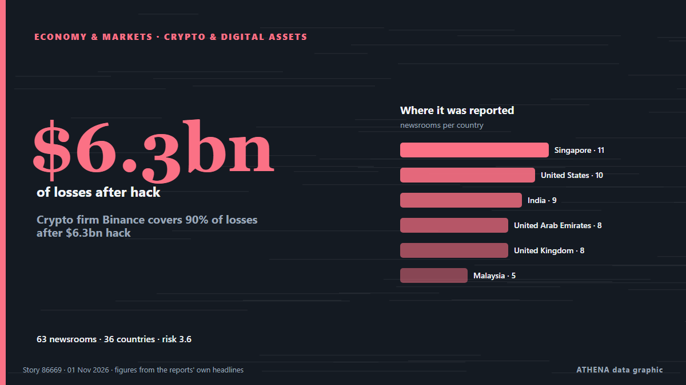

Οικονομία, Χρηματοοικονομικά & Αγορές
Οι τίτλοι των ειδήσεων παρουσιάζονται στα αγγλικά, όπως δημοσιεύτηκαν.
Παρακολούθηση αγορών - επίσημα στοιχεία
Προς τα πού κινούνται τα επίσημα μεγέθη των αγορών - άνοδος, πτώση ή σταθερότητα - με την τελευταία επίσημη τιμή και την ημερομηνία της, και οι ειδήσεις αγορών που επιβεβαίωσε το ATHENA. Επίσημα στοιχεία, όχι τιμές σε πραγματικό χρόνο.
Ενέργεια
| 1 ημέρα | 1 εβδομάδα | 1 μήνας | Επίσημη τιμή | |
|---|---|---|---|---|
| Πετρέλαιο Brent | ▼ | ▲ | ▲ | $123,10/bblΕπίσημα στοιχεία της 27 Οκτ 2026 |
| Πετρέλαιο WTI | ▼ | ▼ | ▲ | $103,37/bblΕπίσημα στοιχεία της 27 Οκτ 2026 |
| Φυσικό αέριο ΗΠΑ (Henry Hub) | ▲ | ▼ | ▼ | Ασυνήθιστη κίνηση $2,76/MMBtuΕπίσημα στοιχεία της 27 Οκτ 2026 |
| Ευρωπαϊκό φυσικό αέριο (1 μήνας · 3 μήνες · 12 μήνες)(1Μ · 3Μ · 12Μ) | ▲ | ▲ | ▲ | $25,49/MMBtuΕπίσημα στοιχεία της 1 Σεπ 2026 |
| Άνθρακας (Αυστραλία) (1 μήνας · 3 μήνες · 12 μήνες)(1Μ · 3Μ · 12Μ) | ▲ | ▲ | ▲ | $153,84/tΕπίσημα στοιχεία της 1 Σεπ 2026 |
Τρόφιμα
| 1 μήνας | 3 μήνες | 12 μήνες | Επίσημη τιμή | |
|---|---|---|---|---|
| Σιτάρι | ▲ | ▲ | ▲ | $246,85/tΕπίσημα στοιχεία της 1 Σεπ 2026 |
Χρηματιστήρια ΗΠΑ
| 1 ημέρα | 1 εβδομάδα | 1 μήνας | Επίσημη τιμή | |
|---|---|---|---|---|
| S&P 500 | ▼ | ▲ | ▲ | Μόνο κατεύθυνση (δείκτης © Cboe)Επίσημα στοιχεία της 29 Οκτ 2026 |
| Nasdaq Composite | ▼ | ▲ | ▼ | Μόνο κατεύθυνση (δείκτης © Cboe)Επίσημα στοιχεία της 29 Οκτ 2026 |
Επιτόκια, κίνδυνος και δολάριο
| 1 ημέρα | 1 εβδομάδα | 1 μήνας | Επίσημη τιμή | |
|---|---|---|---|---|
| Απόδοση 10ετούς ομολόγου ΗΠΑ | ▼ | ▲ | ▼ | 4,98 %Επίσημα στοιχεία της 29 Οκτ 2026 |
| Μεταβλητότητα αγοράς (VIX) | ▲ | ▼ | ▲ | Μόνο κατεύθυνση (δείκτης © Cboe)Επίσημα στοιχεία της 29 Οκτ 2026 |
| Δολάριο ΗΠΑ, ευρύς δείκτης | ▬ | ▬ | ▲ | 121,32Επίσημα στοιχεία της 23 Οκτ 2026 |
Το ευρώ έναντι άλλων νομισμάτων
| 1 ημέρα | 1 εβδομάδα | 1 μήνας | Επίσημη τιμή | |
|---|---|---|---|---|
| EUR/USD | ▲ | ▼ | ▼ | 1,1172 USDΕπίσημα στοιχεία της 30 Οκτ 2026 |
| EUR/GBP | ▼ | ▼ | ▼ | 0,8338 GBPΕπίσημα στοιχεία της 30 Οκτ 2026 |
| EUR/CHF | ▼ | ▼ | ▼ | 0,9194 CHFΕπίσημα στοιχεία της 30 Οκτ 2026 |
| EUR/JPY | ▼ | ▲ | ▼ | 175,68 JPYΕπίσημα στοιχεία της 30 Οκτ 2026 |
| EUR/CNY | ▲ | ▼ | ▼ | 7,4326 CNYΕπίσημα στοιχεία της 30 Οκτ 2026 |
| EUR/TRY | ▲ | ▲ | ▲ | 55,801 TRYΕπίσημα στοιχεία της 30 Οκτ 2026 |
| EUR/NOK | ▼ | ▼ | ▼ | 10,3120 NOKΕπίσημα στοιχεία της 30 Οκτ 2026 |
Πηγές: Υπηρεσία Ενεργειακών Πληροφοριών ΗΠΑ (πετρέλαιο, φυσικό αέριο ΗΠΑ), ΔΝΤ (ευρωπαϊκό φυσικό αέριο, άνθρακας, σιτάρι), Υπουργείο Οικονομικών και Federal Reserve των ΗΠΑ (απόδοση 10ετούς, δείκτης δολαρίου) και Cboe (VIX), S&P Dow Jones Indices (S&P 500), Nasdaq (Nasdaq Composite), μέσω FRED (Federal Reserve Bank of St. Louis)· ισοτιμίες αναφοράς του ευρώ © Ευρωπαϊκή Κεντρική Τράπεζα. Οι τιμές είναι οι τελευταίες επίσημες, με την ημερομηνία τους - όχι τιμές σε πραγματικό χρόνο. Τις κατευθύνσεις τις υπολογίζει το ATHENA.
Κρυπτονομίσματα, ETF και μετοχές στις ειδήσεις
- Crypto firm Binance covers 90% of losses after $6.3bn hack Κίνδυνος 3.2 1 Νοε
- S&P cuts Meta’s outlook to negative Κίνδυνος 3.6 1 Νοε
- Judge dismisses Trump's lawsuit against Wall Street Journal over Epstein birthday book Κίνδυνος 2.2 1 Νοε
- Potentially historic drop for Alphabet's stock drags US market lower Κίνδυνος 5.2 1 Νοε
- FBI blames North Korea for US$6 billion Binance crypto hack Κίνδυνος 3.4 1 Νοε
- Crypto exchanges call for quick moves to bolster defences after Binance heist Κίνδυνος 1.7 31 Οκτ
- As it happened: Binance’s record $6.3B crypto hack Κίνδυνος 3.5 31 Οκτ
- Crypto Biz: Bitcoin’s quantum threat is becoming an economic problem Κίνδυνος 1.4 31 Οκτ
- Nasdaq faces $2 trillion wipeout in October as AI spending fears deepen Κίνδυνος 1.6 31 Οκτ
- Nvidia weighs credit support for Nscale as data center, IPO face pressure Κίνδυνος 0.0 31 Οκτ

Κρυπτονομίσματα & ψηφιακά στοιχείαCrypto firm Binance covers 90% of losses after $6.3bn hack
NEW YORK: Cryptocurrency platform Binance said on Thursday that it had fallen victim to a major hack, resulting in the freezing of more than US$2.5 billion in an effort to prevent the assets from… από New Straits Times
| 19 Οκτ | 37 |
|---|---|
| 20 Οκτ | 9 |
| 21 Οκτ | 34 |
| 22 Οκτ | 82 |
| 23 Οκτ | 61 |
| 24 Οκτ | 28 |
| 25 Οκτ | 29 |
| 26 Οκτ | 119 |
| 27 Οκτ | 131 |
| 28 Οκτ | 127 |
| 29 Οκτ | 100 |
| 30 Οκτ | 104 |
| 31 Οκτ | 22 |
| 1 Νοε | 21 |
Trick or treat? Police respond to more than 100 disturbances over Halloween
In Luxembourg City two individuals threw fire crackers at officers. από Luxembourg Times
CJP backs INDIA bloc's Ramlila Maidan rally, but won't participate in it, says Dipke; cites ‘neutral platform’ identity
Abhijeet Dipke said the CJP supported the cause but would maintain its independent identity. από Hindustan Times
ECB President Lagarde to step down on 7 February 2027
European Central Bank President Christine Lagarde will step down on Feb. από CNBC Economy
How Kalshi can help the Federal Reserve
Prediction markets may be a win for central banking. από The Economist - Finance & economics
Scam centres relocated from Cambodia raided in Madagascar
Raids against online scam centres in Madagascar have exposed ties with a criminal group that ran similar operations in Cambodia, also duping African nationals via human trafficking, authorities say. από Bangkok Post
FBI blames North Korea for US$6 billion Binance crypto hack
Binance says a security breach impacted about $6.3 billion in assets. από CNBC World
Binance replenishes 90% of assets stolen in security incident
The exchange said it remained on track to resume withdrawal services on Sunday, November 1, within its previously stated timeframe. από The Jerusalem Post
Governor Punjab assures support to addressing key issues of business community
ISLAMABAD: Governor Punjab Sardar Saleem Haider Khan on Saturday assured the business community of the federal capital of his support in resolving its longstanding issues, including the establishment… από Business Recorder
Tech sell-off and Binance hack rattle investors
Amazon and Intel worsen the sell-off with disappointing earnings releases. από CNBC World
Liquidators agree sale of China Evergrande property management unit
Asia Pacific-focused investment firm PAG will buy a majority stake in Evergrande Property Service for HK$4 billion (US$514 million). από CNA (Channel NewsAsia)
WHO statement on notification of withdrawal of the United States
WHO regrets the United States’ notification of withdrawal from WHO – a decision that makes both the United States and the world less safe. από WHO news
Italy demands release of another group of activists detained in West Bank
(ANSA) - ROME, 30 OTT - The Italian Foreign Ministry has called for the "immediate release" of five Italian activists detained in the West Bank on Thursday while accompanying Palestinian farmers… από ANSA English
Bank of Canada maintains the policy rate at 2¼%
The Bank of Canada today held its target for the overnight rate at 2.25%, with the Bank Rate at 2.5% and the deposit rate at 2.20%. από Bank of Canada
Crypto exchanges call for quick moves to bolster defences after Binance heist
A record US$6.3 billion hack of Binance exposes its vulnerability. από The Business Times
Three bonus winter payments worth £550 for DWP state pensioners over 80
State pensioners living in council tax bands A to D will receive a £100 handout. από Birmingham Mail
Warren Buffett hasn't had a drink of water in 50 years. At least, that's what he told Bill Ackman.
Bill Ackman says he once asked Warren Buffett if he drinks water. από Business Insider
As it happened: Binance’s record $6.3B crypto hack
How Binance’s $6.3 billion hack unfolded, from the first onchain alerts to $3 billion in frozen funds and a widening security investigation. από Cointelegraph
Gold Slides to 13-Month Low as Rising Energy Prices Weigh on Markets
LONDON, Oct 30: Gold prices fell below $3,900 an ounce on Friday, hitting their lowest level in 13 months as persistently high global energy prices continued to weigh on precious m... από Arab Times
Chainalysis discloses data breach from "offensive agentic techniques"
Blockchain analytics firm Chainalysis disclosed a data breach after attackers used "offensive agentic techniques" to access internal systems and tools, exposing customer names, email addresses, user… από BleepingComputer
Govt Partners with Control Union Academy to Boost Quality of Uganda's Agricultural Exports
Nasdaq faces $2 trillion wipeout in October as AI spending fears deepen
More than $2 trillion in market value is set to be wiped from the tech-heavy Nasdaq 100 this month, as Big Tech earnings intensified investor scrutiny of whether the billions being poured into… από The Korea Times
Bitcoin price falls below $80,000 again
Cryptocurrency prices continued to decline, with all major digital assets recording losses over the past 24 hours, according to data from CoinMarketCap. από AzerNews
Canada Pledges €500M Toward EU’s €90B Ukraine Loan
Canadian Prime Minister Mark Carney announced on Friday, Oct. από Kyiv Post
Treasury Says Iran’s Economy Is Crippled
The report does not claim the Iranian government is close to collapse, but says the rial has lost about a quarter of its value since August, inflation has reached 90%, and no oil has been loaded onto… από Kurdistan24 (English)
European Commission proposes 45 billion euros in funding for Ukraine for 2027
Of this amount, 31.7 billion euros would go toward weapons purchases. από TASS (English)
France faces long-term debt risks despite no immediate crisis, Eurobank says
France is not facing an immediate risk of a public debt crisis comparable to the eurozone turmoil of the 2010s, but persistent deficits, weak economic growth and rising borrowing costs pose… από Cyprus Mail
Minutes of the monetary policy meeting on 16 June 2026
Associated Press Of Pakistan State Bank Governor Jameel Ahmad announces the monetary policy decision at a press conference. από APP (Associated Press of Pakistan)
Singapore employment growth accelerates to 27,700 in Q3
Despite total employment growing in Q3, retrenchments in Singapore rose to a nearly six-year high amid economic uncertainty, according to advance labour market data by the Ministry of Manpower. από CNA (Channel NewsAsia)
Musasizi Says Export Growth Is Key to Shilling Recovery
Finance Minister Henry Musasizi says Uganda must expand exports, increase domestic production and cut unnecessary public expenditure to ease pressure on the foreign exchange market and restore… από Nile Post
Solving the housing crisis
While the housing crisis in Portugal is undeniable, the Government is already working on reversing the situation. από The Portugal News
Fed holds main interest rate steady despite accelerating inflation
Two policymakers on the Federal Open Market Committee dissented in favor of raising the federal funds rate by 0.25 percentage point. από Supply Chain Dive
Foreign bank branch in UAE fined Dh200 million
Dubai: The Central Bank of the UAE has imposed a financial penalty of Dh200 million on a branch of a foreign bank licensed in the UAE, pursuant to the provisions of the Federal decree law regarding… από Gulf News
US Treasury extends Serbian oil firm NIS operating license until December 11 — TV
NIS submitted an extension request to OFAC for its current operating license on October 24. από TASS (English)
Oil prices set for fourth straight monthly gains as tanker attack highlights supply risks
"Traders will remain focused on oil flows out of the Middle East and the likely escalation by US and allied forces," said Dennis Kissler, senior vice president of trading at BOK Financial. από CNA (Channel NewsAsia)